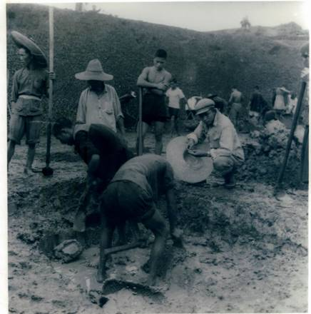
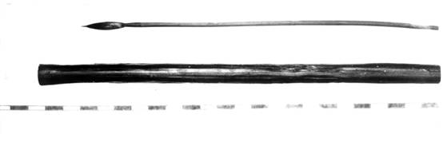
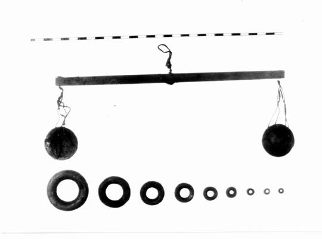

|
||
长沙战国楚墓毛笔出土记实 |
2014年12月2日 信息来源：吴铭生 目前浏览：17517次 |
——吴铭生先生话往事（八） 上个世纪五十年代，湖南省会的长沙进行了大规模基本建设，在取土工程中发现很多战国、两汉古墓群，出土了大量文物，引起了全国文物考古界的关注。尤其是1954年在市区左家公山清理的一座战国楚墓（编号54长左M15），出土了毛笔、铜砝码、兵器、漆器等珍贵文物，意义重大，扬名海外。那时的我，正在省文物工作队从事考古工作，有幸也是这座战国楚墓的发掘工作人员和见证人，对当时的现场情况非常了解。如今，虽事隔几十年，仍记忆犹新，回想往事，历历在目。为了让后代了解当年战国楚墓毛笔出土的经过情况，我在耄耋之年特将往事记录如下，留下永久的回忆。 墓在何方 墓葬位于长沙市南区南大十字路附近的左家公山，这是一座南北狭长的红土山丘，周围都辟为菜土，山头表土曾几次取去做砖，切去的深度约3米有余。1954年6月，原省立第十一中学在此修建校舍，在土方工程中发现此墓，但墓口、墓道及墓室的红色网纹土层均已被挖掉，而底层所填的白膏泥已暴露。当时省文物工作队派我和罗敦静、罗少牧同志率技工任全生、何炳初等前往现场发掘此墓。为了防止现场被破坏，晚上由郭雄、罗少牧和我三人值班看守，当晚我等就在墓坑上铺几块木板，上面用雨布搭起人字棚，坐着守夜。次日，工作队副队长戴亚东调来技工增加力量，先将已暴露的白膏泥层清理后，喜出望外地发现一座保存完整且文物丰富的战国木椁墓。这次重大发现惊动了市民，围观的群众非常拥挤。为了保护文物和利于现场开展工作，我们一方面采取了防卫措施，由派出所派人维持秩序，另一方面夜以继日的加班清理，历时三天两晚才告结束。曾记得晚间工作时，工地没有电灯照明，只好用三盏煤汽灯来代替，工作条件十分简陋，工作难度可想而知。这次发掘得到领导的高度重视和支持，当时的省文物管理委员会副主任陈浴新老先生，虽然年过花甲，却不辞辛劳亲临现场与我们共同工作，还在南门口石三胜饭庄为工作人员开便餐，解决工地吃饭的问题。此外，省文化局局长胡真、省委宣传部部长唐麟、省委统战部部长谢华、省文教委员会主任程星龄等领导，都相继亲临现场指导工作，尤其是在夜晚开椁清理文物时，胡真与谢华两位领导到工地具体指挥。他们这种对文物高度重视的工作精神，使在场的工作人员大受鼓舞，同时使这次发掘取得成功。 这座墓葬形制为土坑竖穴，有斜坡墓道。墓室的回填土：上层为红色网纹土，经过夯筑；下层在葬具的四周铺填白膏泥。白膏泥系做瓷器的高岭土，这种土组织细密，粘性大，将葬具封闭，可以起到减少水分的渗入和隔绝空气的作用，因此棺椁大都赖以保存，如果铺垫很厚，遗体都可以保全，长沙马王堆西汉女尸墓，即是典型的墓例。 这座墓的葬具为两重（周代礼制“士再重”），一棺一椁，全系套榫结构，在外椁两端底部横垫两方枕木，椁长2.69米、宽1.13米。棺长1.95米，宽0.58米，用三道绳索捆住，围绕七匝，绳似丝质，二股搓成，粗细均匀。棺内底垫有笭床，纹饰为透雕对称式几何纹。笭床长1.75米，宽0.3米，虽无髹漆和彩绘，仍然朴素美观。在笭床之上，再铺放一床竹席，其人字形纹的编织技术，可与现在的媲美。墓主遗体仰卧在竹席上面。 这座墓的遗体出土时，全身用簿层的丝帛包裹，裸体，残存腐化肌肉。其葬式特殊：身仰卧，面朝上，上肢平放在腹部，两腿交叉，左腿在上，形成一种“交腿葬”。此种葬式与考古发现的仰身葬、俯身葬和屈肢葬均不同，疑是南楚一种独特葬俗的反映。骨架经湖南医学院解剖科鉴定，除牙齿脱落一颗外，余保存完整，在生理结构上与现代人无异，身高1.579米，年龄约50余岁，男性。惊奇的发现是：头骨内的脑髓还存在，其中两大脑半球保存约2/3，两小脑半球近全部分。最不可思议的是，头骨内的视觉神经仍有保存，这确是一种奇迹。保存下来的脑髓，当时由湖南医学院解剖科副教授王志曾作为课题研究，他做了很多工作。不幸的是，他于1957年被错划为右派，研究工作被迫中断，之后，王又壮志未酬身先逝。八十年代，我在省博物馆考古部任职时，该院派员找我索取脑髓照片，准备整理王的遗作在院刊上发表，以示纪念。 竹管藏瑰宝——毛笔 我们清理随葬物时工作非常慎重认真，当时由我作记录和照相，罗敦静负责绘图，罗少牧协助。随葬物编号共60件，均放置在棺椁之间所隔成的“头箱”和“边箱”内。“头箱”内放有陶鼎、陶敦、陶鐎壶、漆耳杯等；“边箱”内放有陶圆壶、陶盘、陶匜、漆奁、皮甲、木俑、木戟、木盾、竹弓、铜矢、铜剑等，此外在棺内死者的头部，发现一件木簪。随葬的陶器都是明器，火候底。兵器除矢和剑外，也都是为随葬而用竹木制成的明器。铜剑出土时，是装在木椟内，剑长62厘米，柄上所缠的丝带保存较好，格上嵌绿松石，剑鞘完好如新。这件剑不仅装饰华丽，而且异常犀利，似能断发。箭装在矢箙内，矢长70厘米，杆上着彩绘，末端尚有残羽，镞呈三角形，穿透力很强。皮甲上半身是用小方块皮革缀联而成的，下半身却是丝织物，质软以利作战。漆奁内盛置一面铜镜，镜纽上系丝带，可供悬挂。漆耳杯四件，用丝帛包裹，绘有朱色龙、凤、鸟形纹饰，色泽艳丽。在“头箱”内出土一件竹笥，笥内装有天平、砝码、木梳、竹管（内藏毛笔）、小竹筒、竹片、铜削等。天平保存很完整，木杆长27厘米，中间置丝线提纽，两端各系一铜盘。砝码大小共九个，其中最大的重四市两，此外的依次递减，重量各相差一半，制作非常规范，是当时称量金币的科学衡器。毛笔由于装在竹管内，在现场清理时我等并未发现，平面图上编号只注明是“竹管”，后由蔡季襄先生在室内整理时发现，这件珍贵文物才重见天日。蔡在建国前是我省著名的古董商，对古董见识广，而且饱读诗书，颇有学识。建国后，在省文物工作队从事文物保养工作，他认真负责，工作细致，平时与我们年轻人相处甚好，受到大家的尊重。那次，他在室内整理这座墓葬文物时，看到上述的竹管有不少泥土，就用棉花沾水仔细洗净，意外发现竹管两端是空的，窥见管内藏有一小木杆，于是用修钟表的镊子向内拨动夹出，原来是一支完好的毛笔。当时喜出望外，大家都非常高兴，不约而同的称赞蔡公工作认真细致，抢救了一件国宝，为湖南文物考古界立了大功。这个重大的发现，传媒界争相报导，震惊海内外，引起各界的关注。出土的毛笔，杆长18.5厘米，径0.4厘米，毛长2.5厘米，全长21厘米。此笔经长沙市五一路制笔行业“老三和”老技师的鉴定，认为是用上好的兔箭毛制作而成的，但制作方法与现代的有所不同，它是将笔毛围在杆的一端，然而用细小的丝线绕缠，外面施漆胶固而成，竹管即是当时的笔筒。 这支珍贵的毛笔的发现，引起了学术界的高度重视，认为在研究楚文化乃至中国的文化史都具有莫大的价值，是一件弥足珍贵的国宝（已为原中国历史博物馆收藏）。然而，由于这座墓葬的年代和墓主的族属，是战国晚期的楚墓，因此涉及我国世代相传秦蒙恬造笔史实的争议。此事，学术界目前尚无定论，有待考古新发现进行研究。  图一 左家公山战国楚墓发掘现场，蹲立者为参与发掘工作的吴铭生  图二 毛笔和竹管  图三 天平和砝码 |